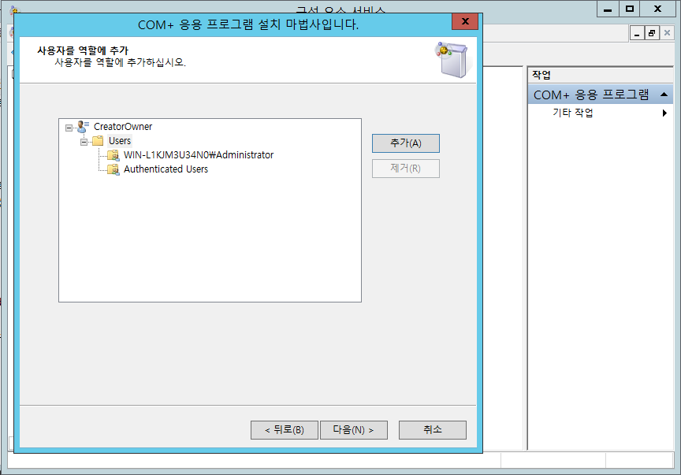

#설치 및 환경 구성
토스페이먼츠 API는 보안을 위해 TLS 1.2 이상으로만 통신합니다. 서버 환경이 TLS 1.2를 지원하지 않으면 API를 호출할 때 핸드셰이크 단계에서 연결이 끊어집니다.
버전이 TLS 1.2를 지원하는 것과 실제로 TLS 1.2로 연결하는 것은 다릅니다. 버전은 충족했으나 기본값이 TLS 1.0이라 실패하는 경우가 많으므로, 최소 사양과 추가 설정 여부를 함께 확인합니다.
#언어별 최소 사양
| 언어・플랫폼 | 최소 사양 | 권장 사양 | 추가 설정 |
|---|---|---|---|
| Java | JDK 7 (1.7) | JDK 8 ~ 17 | JDK 별 빌드 선택 |
| PHP | PHP 5.6 + OpenSSL 1.0.1 이상 | PHP 7 이상 + OpenSSL 1.0.2 / 1.1.1 | 상황에 따라 |
| ASP (Classic) | Windows Server 2008 R2 + KB3140245 | Windows Server 2016 이상 | 필요 (2012 R2 이하) |
| C# (.NET) | .NET Framework 4.5 | .NET Framework 4.7 이상, .NET 6 이상 | 필요 (4.6.1 이하) |
#Java 환경 구성
#지원 버전
| 버전 | 지원 | XPayClient 빌드 | 설명 |
|---|---|---|---|
| JDK 6 이하 | ❌ | - | TLS 1.2 를 쓸 수 없습니다. 업그레이드가 필요합니다. |
| JDK 7 (1.7) | ⚠️ | JDK 1.7 전용 빌드 | TLS 1.2 를 지원하지만 기본값이 TLS 1.0 입니다. mall.conf의 default_secure_protocols = 2048(TLS 1.2)을 유지합니다. |
| JDK 8 ~ 17 | ✅ | JDK 1.8 ~ 17 빌드 | TLS 1.2 가 기본으로 활성화되어 있습니다. |
#XPayClient 빌드
XPayClient 4.1.0.0 은 서버 JDK 에 맞는 빌드를 골라 씁니다. 두 빌드의 공개 API 와 해시 계산 결과는 같으므로 연동 코드는 바꾸지 않아도 됩니다.
| 빌드 | 서버 JDK | HttpClient | mall.conf의 tx_version | Java 샘플 패키지 |
|---|---|---|---|---|
| JDK 1.8 ~ 17 빌드 | JDK 8 ~ 17 | 3.x, 4.x | 4이면 4.x, 없으면 3.x. 샘플은 tx_version = 4 | xpay-samples-java-jdk1.8-17 |
| JDK 1.7 전용 빌드 | JDK 7 | 3.x 만 | 쓰지 않습니다. 값이 있어도 3.x 로 동작합니다. | xpay-samples-java-jdk1.7 |
#라이브러리 설치
Java 샘플 패키지의 webapp/WEB-INF/lib 폴더에 XPayClient 라이브러리와 공통 라이브러리가 들어 있습니다. 빌드에 따라 구성이 다릅니다.
JDK 1.8 ~ 17 빌드 (xpay-samples-java-jdk1.8-17)
| 파일 | 설명 | 가맹점 수정 |
|---|---|---|
XPayClient.jar | API 호출 라이브러리 (4.1.0.0, JDK 1.8 ~ 17 빌드) | 수정 불가 |
commons-httpclient-3.1.jar | HttpClient 3.x. tx_version이 4 가 아닐 때 사용 | 수정 불가 |
httpclient-4.5.14.jar | HttpClient 4.x. tx_version = 4일 때 사용 | 수정 불가 |
httpcore-4.4.16.jar | HttpClient 4.x | 수정 불가 |
commons-codec-1.16.0.jar | 공통 라이브러리 | 수정 불가 |
commons-logging-1.3.0.jar | 공통 라이브러리 | 수정 불가 |
json_simple.jar | 공통 라이브러리 | 수정 불가 |
JDK 1.7 전용 빌드 (xpay-samples-java-jdk1.7)
| 파일 | 설명 | 가맹점 수정 |
|---|---|---|
XPayClient.jar | API 호출 라이브러리 (4.1.0.0, JDK 1.7 빌드) | 수정 불가 |
commons-httpclient-3.1.jar | HttpClient 3.x | 수정 불가 |
commons-codec-1.3.jar | 공통 라이브러리 | 수정 불가 |
commons-logging.jar | 공통 라이브러리 | 수정 불가 |
json_simple.jar | 공통 라이브러리 | 수정 불가 |
- 웹 애플리케이션의
WEB-INF/lib에서 기존 XPayClient 관련 jar(이전 버전의XPayClient.jar,commons-*.jar등)를 모두 지운 뒤, 사용할 빌드의 jar 를 모두 복사합니다. 이전 버전 jar 가 함께 남아 있으면 어느 쪽이 로드될지 알 수 없습니다. XPayClient.jar외의 라이브러리도 반드시 클래스패스에 포함되어야 합니다. 서블릿 컨테이너는WEB-INF/lib의 jar 를 클래스패스에 자동으로 추가하므로, 다른 위치에 두는 경우에만 클래스패스를 직접 설정합니다.lgdacom/conf폴더를 웹에서 접근할 수 없는 경로에 두고mall.conf에 상점아이디와 mertkey 를 설정합니다. JDK 1.8 ~ 17 빌드에서 HttpClient 4.x 를 쓰려면tx_version = 4를 설정합니다. 자세한 내용은 conf 설정을 참고합니다.
JSP 페이지에서는 다음과 같이 클래스를 가져옵니다.
<%@ page import="lgdacom.XPayClient.XPayClient" %>mall.conf의 keystore_cacerts_dir을 비워 두면 JDK 기본 cacerts로 서버 인증서를 검증합니다. 별도 신뢰 저장소를 쓸 때만 경로를 지정하며, 지정한 경로에 파일이 없으면 응답코드 20101로 실패합니다.샘플 패키지의 전체 파일 구성은 샘플 파일 구성을 참고합니다.
#PHP 환경 구성
PHP는 언어 버전보다 함께 컴파일된 OpenSSL 버전이 중요합니다. TLS 1.2는 OpenSSL 1.0.1 이상이 필요하므로, PHP만 올려도 해결되지 않을 수 있습니다.
#지원 버전
| 버전 | 지원 | 설명 |
|---|---|---|
| PHP 5.4 이하 | ❌ | TLS 1.2를 지정할 방법이 없습니다. |
| PHP 5.5 | ⚠️ | TLS 1.2 상수가 추가되었습니다. cURL은 5.5.19 이상이 필요합니다. |
| PHP 5.6 | ✅ | 가장 높은 TLS 버전을 자동으로 협상하며, 인증서 검증도 기본으로 활성화됩니다. |
| PHP 7 이상 | ✅ | 별도 설정 없이 사용할 수 있습니다. |
#라이브러리 설치
PHP는 별도의 설치 파일 없이 PHP 샘플(xpay-samples/php)의 webapp/lgdacom 폴더에 있는 PHP 클래스를 불러와 사용합니다.
| 파일 | 설명 | 가맹점 수정 |
|---|---|---|
lgdacom/XPayClient.php | API 클래스 | 수정 불가 |
lgdacom/JSON.php | JSON 형식 변환 클래스 | 수정 불가 |
lgdacom/conf/ca-bundle.crt | SSL 인증서 | 수정 불가 |
lgdacom폴더를 상점 서버에 복사합니다.lgdacom/conf폴더를 웹에서 접근할 수 없는 경로에 두고mall.conf에 상점아이디와 mertkey를 설정합니다. 자세한 내용은 conf 설정을 참고합니다.
결제 처리 페이지에서는 다음과 같이 클래스를 불러옵니다. 경로는 lgdacom 폴더를 둔 위치에 맞게 바꿉니다.
require_once 'lgdacom/XPayClient.php';샘플 패키지의 전체 파일 구성은 샘플 파일 구성을 참고합니다.
#ASP 환경 구성
Classic ASP는 자체 TLS 스택이 없습니다. MSXML2.ServerXMLHTTP, WinHttp.WinHttpRequest.5.1이 Windows의 WinHTTP・Schannel을 그대로 사용하므로 운영체제 설정이 지원 여부를 결정합니다.
#지원 버전
| Windows 버전 | 지원 | 설명 |
|---|---|---|
| Windows Server 2003 이하 | ❌ | TLS 1.2를 지원하지 않습니다. OS 업그레이드가 필요합니다. |
| Windows Server 2008 | ❌ | 지원이 제한적입니다. 업그레이드를 권장합니다. |
| Windows Server 2008 R2 ~ 2012 R2 | ⚠️ | 패치와 레지스트리 설정이 필요합니다. |
| Windows Server 2016 이상 | ✅ | 기본으로 활성화되어 있습니다. |
#라이브러리 설치
ASP 샘플(xpay-samples/asp)의 install/XPayClientForCOM 폴더에 COM 컴포넌트 XPayClientCom.dll이 들어 있습니다. 서버 환경에 맞는 DLL을 골라 등록해야 합니다.
install/XPayClientForCOM/
├── X64/
│ ├── MD/XPayClientCom.dll
│ └── MT/XPayClientCom.dll
└── X86/
├── MD/XPayClientCom.dll
└── MT/XPayClientCom.dll#MT와 MD 빌드
MT와 MD는 XPayClientCom.dll을 빌드할 때 C 런타임 라이브러리(CRT)를 어떻게 연결했는지에 따른 구분입니다. 기능은 같고, 서버에 필요한 구성 요소가 다릅니다.
| 폴더 | CRT 연결 방식 | 서버 요구 사항 |
|---|---|---|
MT | 정적 링크. CRT가 DLL 안에 포함되어 있습니다. | 별도 설치 없이 사용할 수 있습니다. |
MD | 동적 링크. CRT를 Microsoft가 제공하는 외부 DLL에서 불러옵니다. | DLL이 빌드된 버전의 Visual C++ 재배포 가능 패키지가 서버에 설치되어 있어야 합니다. 패키지의 비트 수(x64, x86)도 선택한 폴더와 같아야 합니다. |
특별한 이유가 없다면 MT 빌드를 사용합니다. MD 빌드에는 Visual C++ 2008 재배포 가능 패키지(msvcr90.dll, mfc90u.dll)가 필요합니다. MD 빌드는 서버에 해당 재배포 패키지를 이미 설치해 관리하고 있는 경우에 씁니다. 재배포 패키지가 없으면 COM+ 구성 요소를 설치하거나 Server.CreateObject로 객체를 생성하는 단계에서 DLL을 불러오지 못해 실패합니다.
MT와 MD는 토스페이먼츠가 DLL을 빌드할 때의 옵션입니다. ASP는 완성된 COM 구성 요소를 불러와 사용하므로, 상점에서 빌드 옵션을 맞추거나 DLL을 다시 컴파일할 필요는 없습니다.#설치 순서
- 서버 OS와 IIS 응용 프로그램 풀의 비트 수에 맞는 폴더(
X64또는X86)를 고르고, 그 안에서MT또는MD빌드의XPayClientCom.dll을 선택합니다. - 선택한 DLL을 계속 유지할 경로에 복사합니다. COM+는 등록할 때의 파일 경로를 기억하므로, 등록한 뒤 DLL을 옮기거나 지우면 객체를 생성할 수 없습니다.
- 아래 COM+ 등록 절차에 따라 구성 요소 서비스에 등록합니다.
lgdacom/conf폴더를 웹에서 접근할 수 없는 경로에 두고mall.conf에 상점아이디와 mertkey를 설정합니다. 자세한 내용은 conf 설정을 참고합니다.
등록이 끝나면 ASP 페이지에서 Server.CreateObject("XPayClientCOM.XPayClient")로 객체를 생성합니다.
샘플 패키지의 전체 파일 구성은 샘플 파일 구성을 참고합니다.
#COM+ 등록
XPayClientCom.dll은 Windows 구성 요소 서비스에서 COM+ 응용 프로그램으로 등록합니다. 아래 절차는 Windows Server 2012 화면 기준이며, 2008 R2 이상에서 메뉴 구성이 같습니다. 관리자 권한 계정으로 진행합니다.
#1. 빈 COM+ 응용 프로그램 만들기
- 제어판 > 관리 도구 > 구성 요소 서비스를 실행합니다.
- 왼쪽 트리에서 구성 요소 서비스 > 컴퓨터 > 내 컴퓨터 > COM+ 응용 프로그램을 선택하고, 마우스 오른쪽 버튼을 눌러 새로 만들기 > 응용 프로그램을 선택합니다.
- COM+ 응용 프로그램 설치 마법사가 열리면 다음을 누르고 빈 응용 프로그램 만들기를 선택합니다.
- 응용 프로그램 이름에
XPayClientCom을 입력하고, 활성화 유형으로 서버 응용 프로그램을 선택한 뒤 다음을 누릅니다. - 계정 설정에서 네트워크 서비스 - 네트워크 액세스 권한을 지닌 기본 서비스 계정을 선택하고 다음을 누릅니다.
- 응용 프로그램 역할 추가 화면은 그대로 두고 다음을 누릅니다. 기본으로 있는
CreatorOwner역할만 있으면 됩니다.

#2. Authenticated Users 추가
- 사용자를 역할에 추가 화면에서
CreatorOwner아래의 Users를 선택하고 추가를 누릅니다. - 사용자 또는 그룹 선택 창에서 고급 > 지금 찾기를 누릅니다.
- 검색 결과에서 Authenticated Users를 선택하고 확인을 누릅니다. 선택할 개체 이름에 추가된 것을 확인하고 다시 확인을 누릅니다.
- Users 아래에 Authenticated Users가 추가되었는지 확인하고 다음 > 마침을 누릅니다.

#3. XPayClientCom.dll 구성 요소 설치
- COM+ 응용 프로그램 아래에 생긴 XPayClientCom을 펼치고, 구성 요소에서 마우스 오른쪽 버튼을 눌러 새로 만들기 > 구성 요소를 선택합니다.
- COM+ 구성 요소 설치 마법사에서 다음을 누르고 새 구성 요소 설치를 선택합니다.
- 추가를 눌러 앞에서 복사해 둔
XPayClientCom.dll을 선택하고 열기를 누릅니다. - DLL이 올바르면 포함된 구성 요소에
XPayClient가 표시되고 인터페이스가 있음으로 나옵니다. 다음 > 마침을 누릅니다.

#4. 등록 확인
- XPayClientCom > 구성 요소 > XPayClient의 메서드 항목에 함수 목록이 표시되는지 확인합니다.
- XPayClientCom에서 마우스 오른쪽 버튼을 눌러 종료한 뒤 다시 시작합니다. 오류 창이 뜨지 않으면 정상적으로 등록된 것입니다.
#주의 사항
- 시스템 로캘: COM 구성 요소는 요청 값을 Windows 의 시스템 코드 페이지로 변환해 EUC-KR 로 보냅니다. 서버의 시스템 로캘이 한국어(코드 페이지 949)가 아니면 한글 요청 값이 깨집니다.
- UTF-8 페이지: 샘플 페이지는 UTF-8 로 작성되어 있고, 첫 줄의
<%@ CodePage=65001 %>와Response.CharSet = "UTF-8"로 처리합니다. COM 구성 요소는 응답의 한글을 그대로 돌려주므로output_UTF8값과 관계없이 화면에 바르게 표시됩니다. LGD_ENCODING: 요청은 COM 구성 요소가 EUC-KR 로 보내므로 API 요청에LGD_ENCODING을UTF-8로 지정하지 않습니다. 결제창 호출 파라미터의LGD_ENCODING은 이와 관계없습니다.- 반환값 비교:
Init,Init_TX,TX는 성공하면1, 실패하면0(Long)을 돌려줍니다. VBScript 의Not은 비트 연산이라Not 1도 참이 되므로,If xpay.Init_TX(LGD_MID) = 0 Then처럼 값으로 비교합니다. - 프로토콜 값: ASP 는
mall.conf의default_secure_protocols를2048(TLS 1.2)로 설정합니다.
#C# (.NET) 환경 구성
#지원 버전
| 버전 | 지원 | 설명 |
|---|---|---|
| .NET Framework 3.5.1 | ⚠️ | KB3154518 등 패치와 레지스트리 설정이 필요합니다. 신규 연동에는 권장하지 않습니다. |
| .NET Framework 4.0 이하 | ⚠️ | 4.5 런타임이 설치된 환경이라면 값으로 강제할 수 있습니다. |
| .NET Framework 4.5 ~ 4.6.1 | ⚠️ | TLS 1.2를 지원하지만 기본값이 낮습니다. 코드나 레지스트리에서 지정합니다. |
| .NET Framework 4.7 이상 | ✅ | OS 기본 설정을 따릅니다. |
| .NET Core, .NET 5 이상 | ✅ | OS의 TLS 스택을 사용합니다. |
#라이브러리 설치
.NET 샘플(xpay-samples/dotnet)의 webapp/bin 폴더에 API 참조 라이브러리가 들어 있습니다. ASP.NET 은 bin 폴더의 라이브러리를 자동으로 참조합니다.
| 파일 | 설명 | 가맹점 수정 |
|---|---|---|
webapp/bin/XPayClientNet.dll | API 참조 라이브러리 (4.0.0.0) | 수정 불가 |
- 프로젝트에
XPayClientNet.dll을 참조로 추가합니다. 웹 사이트 프로젝트라면bin폴더에 복사해도 됩니다. lgdacom/conf폴더를 웹에서 접근할 수 없는 경로에 두고mall.conf에 상점아이디와 mertkey를 설정합니다. 자세한 내용은 conf 설정을 참고합니다.- .NET은
mall.conf의default_secure_protocols를 다른 언어(2048)와 달리3072로 설정합니다.
참조를 추가한 뒤 new XPayClient()로 객체를 생성합니다.
샘플 패키지의 전체 파일 구성은 샘플 파일 구성을 참고합니다.
#주의 사항
- 애플리케이션 전체 설정: 라이브러리가
ServicePointManager.ServerCertificateValidationCallback과ServicePointManager.SecurityProtocol을 설정하므로, 같은 웹 애플리케이션의 다른 HTTPS 통신에도 적용됩니다. 특히verify_cert = 0이면 애플리케이션 전체의 인증서 검증이 꺼지므로, 운영 환경에서는verify_cert = 1을 유지합니다. - 인증서 검증 콜백 누적: 라이브러리는 요청할 때마다 인증서 검증 콜백을 추가합니다. 애플리케이션 풀이 재시작되지 않고 오래 실행되면 콜백이 계속 쌓이므로 IIS 애플리케이션 풀의 정기 재생(Recycling)을 유지합니다.
- 파일 인코딩: ASP.NET 은 BOM 이 없는
.aspx를 서버의 기본 문자셋(한국어 Windows 는 CP949)으로 읽습니다. 샘플의.aspx는 BOM 이 있는 UTF-8 로 저장되어 있으므로 편집할 때 BOM 을 유지합니다. - 설정 파일과 로그: 라이브러리는
mall.conf,lgdacom.conf를 EUC-KR 로 읽고 로그를 EUC-KR 로 기록합니다. 설정 값은 영문·숫자이므로 UTF-8mall.conf도 정상 동작하며, 한글 주석만 깨져 보일 수 있습니다.
찾는 정보가 없다면 실시간 문의로 알려주시기 바랍니다. 기술 지원 매니저가 환경에 맞게 안내해 드립니다.